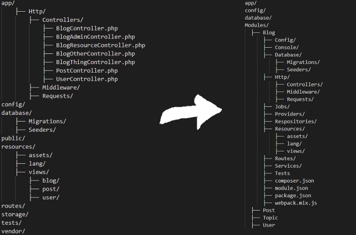
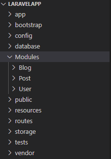

将项目的每个部分构建为一个模块来管理您的大型项目。
当你的项目变大了，文件很多，或者你打算做一个大型的项目时，你发现管理起来很困难，把你的项目的一部分变成模块是解决问题的方法之一。

使用模块化开发，可以将项目每个不同的功能分配到单独的包中。这将使您更容易对项目进行维护。
这里推荐第三方扩展：nwidart/laravel-modules ，laravel 的模块管理器。用起来很方便，GitHub 地址
接下来介绍如何使用：
要在 Laravel 中创建模块，我们可以使用 nwidart/laravel-modules 扩展。它被可以创建模块并利用模块来管理你的大型 Laravel 应用程序。一个模块就像一个 Laravel 包，包含视图、控制器和模型等组件。这个包在 Laravel 5 中得到支持和测试。要安装这个扩展，请运行以下命令：
composer require nwidart/laravel-modules安装完成后，该扩展将自动注册服务提供者和别名。（Laravel 5.5 以前的需要手动注册）
通过运行以下命令发布扩展的配置文件：
php artisan vendor:publish --provider="Nwidart\\\\Modules\\\\LaravelModulesServiceProvider"执行完上面这条命令之后，在 config 文件夹下会生成一个 modules.php 文件，这个是模块开发的配置文件，你可以在这里面进行配置。
默认情况下，模块类不会自动加载。您可以在 composer.json 文件中使用 psr-4 自动加载您的模块。
{
"autoload": {
"psr-4": {
"App\\\\": "app/",
"Modules\\\\": "Modules/"
}
}
}然后运行 composer dump-autoload 命令。
现在我们可以在我们的项目中创建我们的模块。运行以下命令：
php artisan module:make <module_name>
# For Example
php artisan module:make Blogapp/
bootstrap/
vendor/
Modules/
├── Blog/
├── Config/
├── Console/
├── Database/
├── Migrations/
├── Seeders/
├── Entities/
├── Http/
├── Controllers/
├── Middleware/
├── Requests/
├── routes.php
├── Providers/
├── BlogServiceProvider.php
├── Resources/
├── lang/
├── views/
├── Routes/
├── Tests/
├── composer.json
├── module.json
├── package.json
├── webpack.mix.js也可以使用1 个命令来创建多个模块：
php artisan module:make Blog User Post它会在你的项目的 Modules 文件夹中生成一个Blog、User和Post文件夹，如下图所示。

这样您的项目已经模块化，您将能够轻松创建其他模块。
我们简单定义一个路由来访问模块中的控制器方法。
首先在你创建的模块目录下的 Routes/web.php 定义一个路由：
Route::get('/blog', [Modules\\Blog\\Http\\Controllers\\BlogController::class, 'index']);然后在浏览器中访问 http://demo.dev/blog：
为避免路由冲突，我们可以给每个模块的路由添加统一的前缀，在文件 Modules/Blog/Providers/RouteServiceProvider.php 中
protected function mapApiRoutes()
{
Route::prefix('blog') # 设置前缀
->middleware('api')
->namespace($this->moduleNamespace)
->group(module_path('Blog', '/Routes/api.php'));
}其实跟我们在 Laravel 原生应用 app 目录下开发完全一致，只是通过模块重新组织了目录结构而已，更多使用方法可参考官方文档。
# 创建模块的数据库迁移
php artisan module:make-migration create_posts_table Blog
php artisan module:make-migration add_votes_to_users_table Blog
# 查看全部模块列表
php artisan module:list
# 发布模块配置，会在config目录下生成 `模块名.php` 文件
php artisan module:publish-config Blog
# 创建控制台命令
php artisan module:make-command CreatePostCommand Blog
# 为指定的模块生成控制器。
php artisan module:make-controller PostsController Blog
# 启用指定的模块。
php artisan module:enable Blog
# 禁用指定的模块。
php artisan module:disable Blog
# 创建中间件
php artisan module:make-middleware CanReadPostsMiddleware Blog
# 创建消息队列
php artisan module:make-job JobName Blog更多命令可以参考
https://laravelmodules.com/docs/v11/artisan-commands
[1] GitHub 地址: https://github.com/nWidart/laravel-modules[2] 官方文档: https://nwidart.com/laravel-modules/v6/introduction[3] https://laravelmodules.com/docs/v11/artisan-commands: https://laravelmodules.com/docs/v11/artisan-commands[4] 官方文档: https://laravelmodules.com/docs/v11/introduction[5] GitHub地址: https://github.com/nWidart/laravel-modules